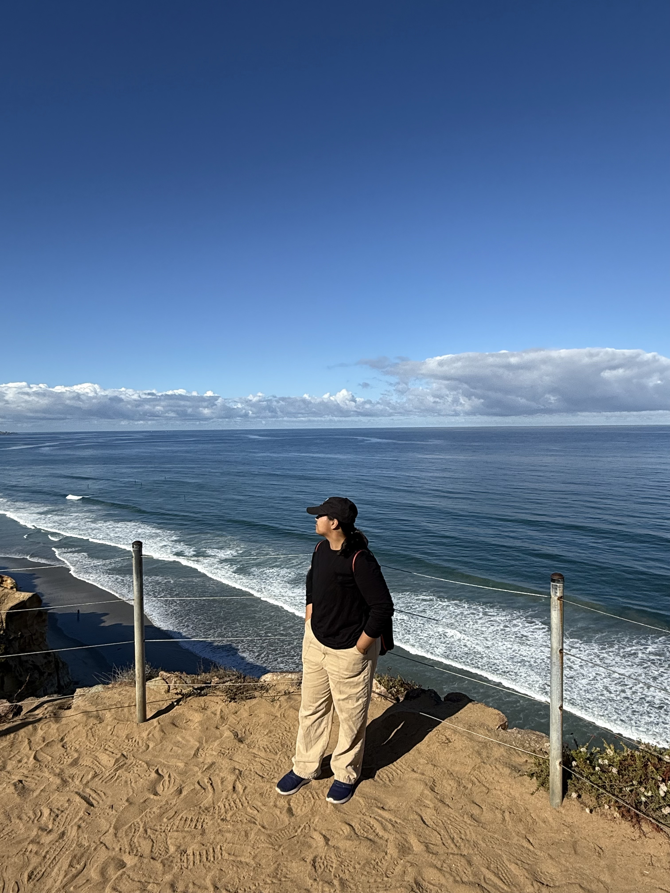

MS Computer Science candidate at USC (3.8 GPA). Shipped network-OS features in production at Celestica, now building applied AI research pipelines at USC's Norman Lear Center.

ID · VERIFIEDStudent Research Engineer
USC Norman Lear Center
Associate Software Engineer
Celestica
Software Development Intern (Senior year)
Sandvine Technologies (Applogic Networks)
Summer Intern, Software Development (Junior year)
Bharat Electronics Limited (BEL)
Summer Intern, Software Development (Sophomore year)
Conneqt Digital
Comparative study of four continuous-time architectures - LTC, CTRNN, NODE, CT-GRU - for binary classification on EEG/EKG signal data across two benchmark datasets. (Research paper in progress.)
PYTORCH · NEURAL ODES · TIME-SERIESBuilt and evaluated 30 ensemble ML/DL models for Kannada & Tulu text classification, pioneering an early Tulu dataset. 86–89% accuracy, presented at ICICV 2024. (Paper in the repo.)
PYTORCH · TENSORFLOW · TRANSFORMERSRAG-based system using FAISS to detect risky or predatory clauses in rental and lease agreements, generating context-aware answers from parsed legal documents.
LANGCHAIN · FAISS · RAGA LangGraph-powered chat assistant on Google Gemini that logs, modifies, and queries daily fitness data in SQLite via natural language.
LANGGRAPH · GENAI · SQLITEA Python-based machine learning application that predicts crop yield using an XGBoost regression model, served via a FastAPI REST API, and containerized with Docker.
FASTAPI · ML MODELS · DOCKERA comparative NLP study that fine-tunes and evaluates 5 state-of-the-art transformer models on a Kannada-English code-mixed humor classification task.
PYTORCH · TENSORFLOW · TRANSFORMERSThis project contains two implementations of the sequence alignment algorithm: the basic dynamic programming version, and the memory-efficient Hirschberg version.
C++ · PYTHON · ALGORITHMSDeep Learning and its Applications, Machine Learning with Data Science, Analysis of Algorithms, Database Systems, Web Technologies.
4-semester merit scholarship recipient. Foundation in data structures, software engineering, and systems.